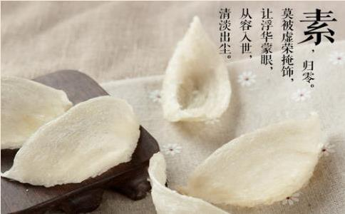

一天劳碌结束，你的晚饭是
清代文人朱锡绶说：“素食则气不浊”，可如今“气浊”的人却不少。越来越多的人经常在暴饮暴食、大鱼大肉下生活，肉吃得多，酒喝得也不少，而且往往追求重口味，油、盐放少了，觉得不香；
近年来，高血压、心脏病、糖尿病等慢性病高发，恶性肿瘤也在人群中肆虐。其中，吃得不
从中医的角度看，大鱼大肉、油盐超标的重口味饮食叫做“肥甘厚味”，是养生的大忌。中国农业大学食品学院副教授范志红指出，目前国人的餐桌的确过于“荤”和“腻”了，肉食原本应当唱配角，现在唱起了主角，油往往也超标。因此，崇尚素食或准素食应该成为一种生活习惯和理念。
1.遵循营养膳食指南，每天总热量要控制住；
2.油每天不超过25克；
3.蔬菜一定要吃够，每天至少1斤，以保证膳食纤维的摄入量。
“素容”最养颜都说“女为悦己者容”。许多女性认为，化妆使自己更美，因此皮肤便成为了化妆品的“试验田”。每天早上，洁肤、爽肤、润肤、粉底液、胭脂、口红、防晒霜……是女性必要的功课，每天光化妆就至少用去30多分钟。晚上睡觉前，也是左一层右一层地抹。本以为能抵御岁月的侵袭，可结果却没能抵挡住过敏的烦扰，皮肤不但经常红肿痒，毛孔还越来越粗大。不少人暗暗疑惑，为何小时候什么都不抹，皮肤油光水滑的，现在成天呵护，反倒起副作用了？
北京中医医院皮肤科张苍博士表示，经常化妆，特别是化彩妆的人，容易堵塞皮肤毛孔，导致暗疮的形成。尤其是夜间，皮肤需要休养生息，如果涂抹过多的化妆品，会影响皮肤的新陈代谢，结果事与愿违。如果用了质量低劣的化妆品，时间长了，容易重金属超标，对身体的伤害更严重。
此外，男人真的喜欢化妆的女人吗？事实并非如此。在一项调查中，绝大多数男人喜欢化淡妆或不化妆的女人，对浓妆艳抹的女人反而敬而远之。他们表示化了妆的女人就好像戴了一副假面具，让人觉得不自信，而且卸了妆前后反差太大，更让人觉得不舒服。
1.少化浓妆，平时淡妆或不化妆，减少接触化妆品；
2.全身衣服的色彩加起来不超过3种，衣服色彩以素雅为主；
3.在服装的材质方面，尽量选天然的材质，如纯棉、麻、真丝、竹纤维等，尤其是内衣和睡衣等。
“素装修”污染少老陈刚买了房，住了半辈子的“四白落地”，他决定好好装修一下自己的新家。中式、欧式、美式田园、地中海风格，每种都借鉴一点，墙刷得五颜六色，又配上大红大绿的家具。一开始觉得新鲜，半年后就受不了了，觉得一回家心情就烦躁，血压也不稳定。心理学家指出，家是休息的港湾，不能样式过杂、颜色过艳。强对比的色调会让人兴奋，弱对比的色调则具有沉静感。
国家室内环境质检中心主任、中国室内装饰协会副会长宋广生告诉《生命时报》记者，在钢筋水泥构建的都市中，人们往往感觉冰冷、缺少人情味，因此渴望温暖，追求自由、舒适、健康的生活。体现在室内装修上，要本着经济适用和美观兼具的原则，那种不分场所、不分对象、极尽“豪华”的浮躁习气与奢侈浪费现象一定要杜绝。提倡“简装修”，还在于过多过杂的材料存在污染风险。一般来说，装饰材料中大部分无机材料是安全和无害的，而有机材料中部分化学合成物，如苯、酚、蒽、醛及其衍生物，具有浓重的刺激性气味，它们会在室内不断挥发，给你的健康造成严重损害。
1.树立安全、环保、节能和节约的室内装饰装修消费观念；
2.提倡简约、自然、淡雅的装饰风格，避免繁复的造型和大改造施工；
3.选择节能产品。
“素心”才快乐王先生家离单位不远不近，坐公交车30分钟就到了。看着身边的朋友都买了车，他心里一直痒痒的，好不容易游说家人买了车，才发现有车一族并不像当初想得那么潇洒。
第一个问题就是养车的费用。保险得买，油价上涨，停车费、过路费就像“小刀割肉”，再加上定期的维修保养，让本来就不鼓的钱包就更瘪了。第二个问题是累心。城市路况每况愈下，堵车带来的就是堵心；路上开车不规矩的人多，总是让人精神高度紧张；再就是找路、找停车位耗费精力。以前上班坐公交车，早上7点半起床，8点出门。现在有了车，得6点起，才能抢到车位。前不久，在经历了一次追尾事故后，王先生下决心把车卖了，平时坐公交车上下班，有急事打车，节假日出游就租辆车，生活又恢复了往日的轻松和平静。
近年来，网上冒出了不少“炫富者”，他们在“秀”的同时，也引来骂声一片。但很多骂人者也承认，自己不过是“羡慕嫉妒恨”罢了，自己也想要那样的生活。再看众多商家的广告，无处不在的“尊崇”、“贵族生活”字眼对受众一再地暗示。
北京安定医院临床心理科西英俊医师告诉《生命时报》记者，结合临床病例，当前社会弥漫着一种追求物质满足的浮躁气氛，这种浮躁建立在一个肤浅、急功近利的社会评价体系之上，人们把物质享受、
1.认识自己，自问到底想要什么样的生活；
2.看到有钱人的时候，多想想人家背后的付出和拼搏，别盲目攀比和模仿人家的享受；
3.学着接受自己，感受内在的力量与和谐的人际关系；
4.多读书和学习。